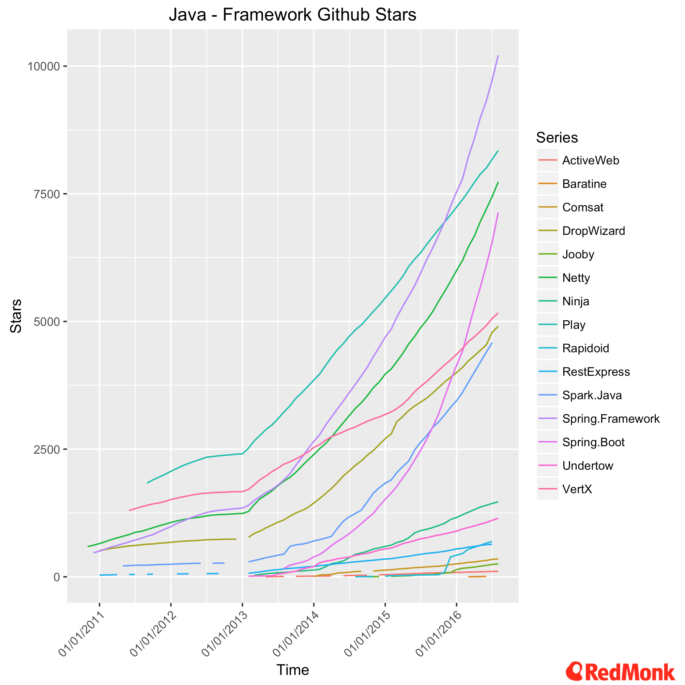

微服务
微服务（Microservice）作为解决当前移动互联云平台和万物互联IOT相关领域所面临的各种问题的架构思想已被广为接受和认可。关于微服务的概念、思想、模式及实现框架的具体原理和应用，本书仅做概要阐述以便于读者对微服务有一个全面的认识。本部分的重点在于探讨实现微服务架构的主流框架对比，以及这些框架如何在DC/OS集群中实现弹性伸缩构建大规模服务集群的具体实践。
从单体应用架构到微服务架构体系的跨越，带来了一系列优势的同时，也产生了诸如通信、服务发现、路由及安全等一系列新的挑战。面对这些挑战，各种服务和方案如雨后春笋不断涌现，呈现出百家争鸣的态势。总体而言，微服务架构主要关注服务如何拆分，如何部署，服务实例如何与外界交互，服务间及服务与外部客户端的通讯机制，服务的位置发现与管理，如何隔离服务故障防止蔓延，如何实现数据的一致性和查询，服务如何验证客户端的身份信息，如何便捷的对服务进行测试，如何对运行中的服务进行审计、度量、跟踪和故障排错等方面。
微服务平台/框架
当前用于开发微服务架构应用的主流平台/框架包括：
Spring，Spring Boot 和 Spring Cloud
Spring作为替代J2EE的轻量级企业应用开发框架占据着企业开发市场的统治地位。Spring Boot是在微服务概念流行起来后，Spring公司开发的一套快速开发Spring应用的框架。它本身并不提供Spring框架的核心特性以及扩展功能，只是用于快速、敏捷地开发新一代基于Spring框架的应用程序。Spring Boot集成了大量的第三方库，以“约定优先配置”（convention over configuration）的思想来摆脱Spring框架中各类纷繁复杂的配置，做到组件开箱即用，使开发者能够更加专注于业务逻辑。Spring Cloud是一个基于Spring Boot实现的云应用开发工具，它与Netflix OSS技术体系整合为基于JVM的云应用开发中的配置管理、服务发现、断路器、智能路由、微代理、控制总线、全局锁、决策竞选、分布式会话和集群状态管理等操作提供了一种简单的开发方式。
Lightbend：Play，Akka，ConductR 和 Lagom
Lightbend（从Typesafe改名而来）发布的开源微服务框架，Lagom（在瑞典语中，“刚刚好的”意思）整合了Lightbend的Akka和Play框架，原生基于Reactive平台设计，提供了一种更容易的方式来构建响应式微服务。Lagom是消息驱动和异步的，使用分布式CQRS持久化模式，并将事件溯源（Event sourcing/ES）作为主要实现。
Lagom底层涉及的技术和框架包括：不变性（Immutablity），事件溯源（ES）和命令查询职责分离（CQRS），Java/Scala，JSON/Jackson，Cassandra，Play框架，Guice，Akka，Akka Streams和Akka Cluster，Typesafe Config配置，slf4j/Logback日志，Lightbend的其它组件及ConductR平台。
Vert.x
Vert.x是“一个在JVM上构建响应式应用的工具集(Toolkit)” 。
Dropwizard
Dropwizard是一个由社区驱动的项目。它是一个用于开发友好的，高性能的REST服务的Java框架。通过一组优化的Java库的集合，使构建企业级Java应用程序更容易。Dropwizard允许与挂接来自外部的非Dropwizards核心的项目，因此可以很容易的使用由社区开发的与Netflix OSS项目对接的模块。
Redmonk分析师Fintan Ryan发布了他的Java框架流行度调研结果，Spring仍然占据统治地位，Spring Boot的流行度呈指数增长，Netty和Play继续保持强劲的增长势头。
